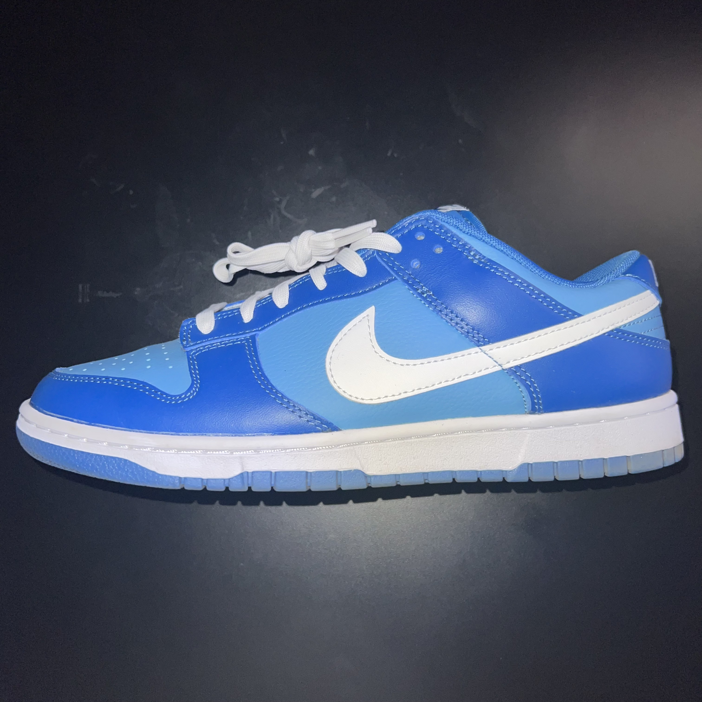

nike

nike dunk low "marina blue"
- Colorway: Light Blue / Marina Blue / White
- Price: $100.00
- The Marina Blue dunks were inspired by the Air Jordan 1's High recently released prior to this colorway.
The marina blue color on the Nike Dunks is a tad bit brighter compard to the Air Jordan 1's.
The position of colors on the Marina Blue's are inverse to the Nike Dunk Low "Argon."
The Marina Blue's used an monochromatic palette approach with different shades and tints of blue.
While adding the color of dutch-white to the Nike logo, emblem, mid-sole, and laces for a splash of color.
Nike also decide to take a different approach on this shoe with the materials used.
Nike dunks typically used durable leather but this go around Nike decided to use tumble leather around the shoe base and logo seperating itself from other classic Nike dunks.